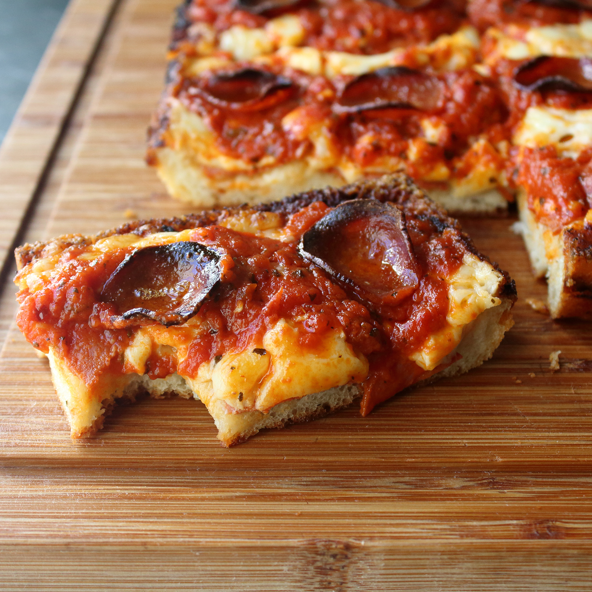
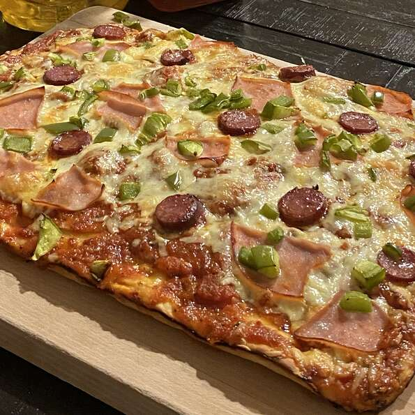

Detroit-Style Pizza


Description:
Forget the old Chicago vs. NY debate! America's best pizza could very well be Detroit-style pizza. Even though it's often referred to as 'deep dish,' I don't think that accurately captures the essence of this crispy, crusty, crazy-good slice. It has flavor elements of a slightly charred thin-crust pizza, with the texture of light, airy focaccia. Plus, if you use the properly shaped pan, the edges of your crust get wonderfully crunchy, making for a truly unique experience.
Ingredients:
This recipe yields 12 servings.
For the Dough:
- 1 cup warm water
- 1 teaspoon white sugar
- 3 teaspoons olive oil, divided
- 1 teaspoon kosher salt
- 2½ cups bread flour
For the Sauce:
- 1 (24 ounce) jar marinara sauce
Dried Oregano:
- 1 teaspoon red pepper flakes
- 1 teaspoon garlic powder
Toppings:
- 1 (8 ounce) package shredded Monterey Jack cheese
- ½ (8 ounce) package mild Cheddar cheese
- 1 (8 ounce) package thick pepperoni slices
Steps:
- Pour warm water into the bowl of stand mixer; mix in yeast and sugar and let dissolve. Add 2 teaspoons olive oil, salt, and bread flour. Knead mixture together with a dough hook attachment until dough is very smooth, soft, and elastic.
- Drizzle remaining olive oil over the bottom of a 10x14-inch Detroit-style pizza pan and spread around with your fingers. Place dough in the center; pull and stretch into a roughly rectangular shape with oiled fingers. Cover and let rise until doubled in volume, about 1 hour. Prepare sauce and cheese in the meantime.
- Combine marinara sauce, oregano, red pepper flakes, and garlic powder in a saucepan over medium-low heat. Simmer to fully hydrate the oregano and garlic, about 15 minutes.
- Preheat the oven to 500 to 550 degrees F (260 to 288 degrees C).
- Dice Monterey Jack and Cheddar cheese into small cubes. Toss lightly to mix together.
- Rub fingertips with some olive oil from the pan. Press out air from the dough while stretching and pushing into a rectangle that goes all the way to the edges of the pan. Stretch up the sides about 1/2 inch or so.
- Lay most of the pepperoni onto the dough. Scatter cheese cubes evenly on top, making sure to fully cover all the edges where dough meets the pan. Ladle sauce on top in 3 long strips. Arrange remaining pepperoni over the sauce.
- Bake in the preheated oven until pizza is somewhere between golden brown and golden black, about 15 minutes. Let cool for 5 minutes.
- Very carefully slide pizza onto a cutting board using a spatula. Cut into individual pieces using the lines of sauce as a guide.
Chef's Notes:
If you can't get the classic Detroit pizza pan, you can also use a 12-inch cast iron skillet, although you may need to not use quite as much dough, but it should be close. You can also use two 8x8-inch metal cake pans, but no matter what you go with, be sure it's at least a few inches deep.
All-purpose flour will work, but bread flour has more gluten and works a little better.
This traditionally uses brick cheese, so if you can find it, substitute 12 ounces brick cheese for the Monterey Jack and Cheddar cheese. You can grate the cheese if preferred. Use any other toppings you like; just add them to the dough before covering with cheese. The sauce recipe makes a little more than you'd need.